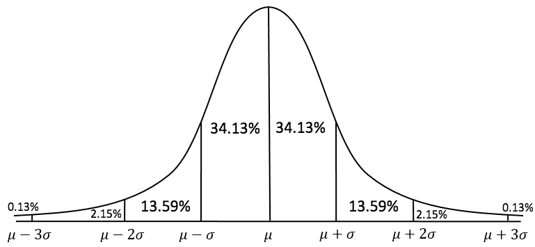
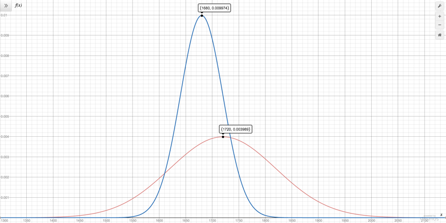

Ranking Glicko Simulator
How to rank players rated with Glicko
Most game rating systems determine, using a value, how good a player is.
However, the Glicko system uses two values to judge a player's strength:
- Rating (second table column) – how good a player is on average.
- Rating Deviation (third table column) – determines the accuracy of the rating (the higher the more inaccurate).
The two values above make up the Glicko rating. In fact, a player's Glicko rating can be represented as a normal distribution curve:
Rating would be the mean (μ), and rating deviation would be two standard deviations from the mean (μ ± 2σ).
Glicko was invented by Harvard professor Mark E. Glickman in 1995. Since I present a very brief and limited view of how Glicko works, you should check out his research paper for more information. Likewise, you can check out the Wikipedia page too instead.
Elo is an example of a game system that uses just one value to determine the rating of a player. This means that comparing two players is very easy – the person with the higher rating is better, of course.
However, since Glicko ratings are based on normal distributions, comparing two players is not as straightforward. Suppose you have two players. Player A has a rating of 1720 and a rating deviation of 100, while player B has a rating of 1680 and a rating deviation of 40. If you take a look at their normal distributions below, it's hard to tell who is better:
In order to determine who is the better player, you will need to use this formula:
E_A=\frac{1}{1+10^{\frac{-g(\sigma)(r_A-r_B)}{400}}}
Where:
- E_A is the expected chance or probability that player A will beat player B
- r_A is player A's rating
- RD_A is player A's rating deviation
- r_B is player B's rating
- RD_B is player B's rating deviation
- \sigma=\sqrt{RD_A^2+RD_B^2}
- g(\sigma)=\frac{1}{\sqrt{1+\frac{3q^2\sigma^2}{\pi^2}}}
- q=\frac{\ln{10}}{400}
By using the formula above, the expected chance that player A will beat player B is...
\sigma=\sqrt{100^2+40^2}=\sqrt{11600}
E_A=\frac{1}{1+10^{\frac{-g(11600)(1680-1720)}{400}}}=0.5543
Since player A has a 55.43% chance of defeating player B, player A is the better player (although very slightly).
If you can compare the two player's Glicko ratings to see who's better, that means you can compare every player with every other player to create a leaderboard, or ranking system.
Unfortunately, comparing each player with every other player can be very computationally intensive, especially if there is a lot of players involved.
In the table below, I've created 250 fake players, each with a randomly generated rating between 1000 and 2000, since 1500 is usually the rating for a new player. Meanwhile, the rating deviation is randomly generated to have a value between 30 and 100, since according to Glicko, any value outside of that range is considered either unrealistically accurate or too unreliable to be used.
Here is a description of what some of the columns mean:
- Average Expected Chance – the average probability of a particular player winning against every other ranked player.
- Mean – the probability that a player would win against an imaginary player with the average Glicko rating of all the ranked players.
- Median – the probability that a player would win against the median player. In this case, it would be against the 125th player.
- New Player – the average probability that a player would would win against a new player with a rating of 1500 and a rating deviation of 350.
The fourth column is what determines the ranking of the players. The fifth to seventh columns are close approximations (cells colored red underank a player while cells colored green overank a player).
| Rank | Rating | Rating Deviation | Average Expected Chance | Mean | Median | New Player |
|---|
The table below shows the accuracy of the fifth to seventh columns from the table above. The fourth column above is assumed to be 100%.
As you can see, finding the expected chance of winning a new player for every ranked player is the most simple and accurate way to set up a ranking system. In conclusion, it is the best estimation of the average expected chance.
| Test Player | Rating | Rating Deviation | Accuracy | Mean of Change in Ranking | Standard Deviation of Change in Ranking |
|---|